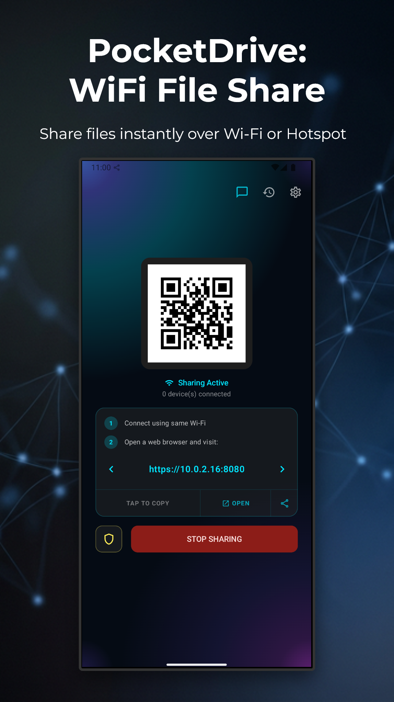
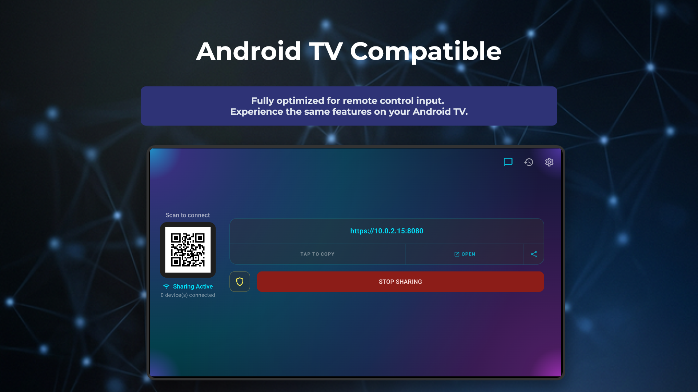
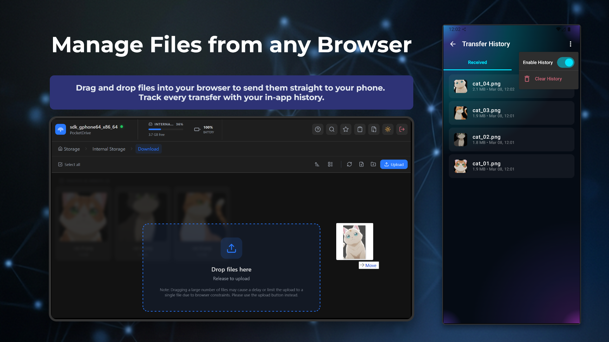
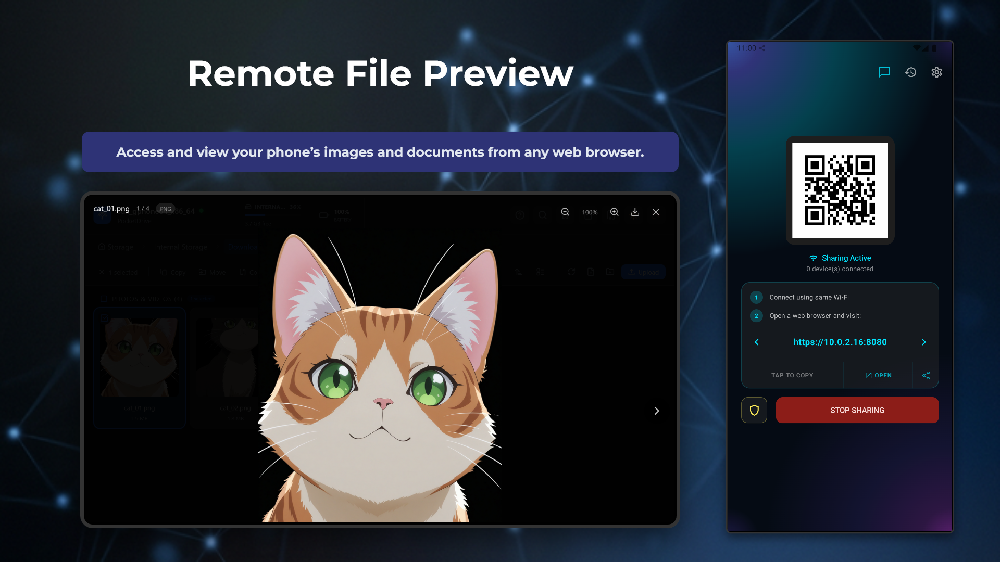
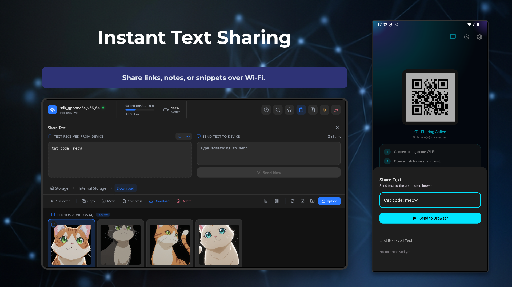
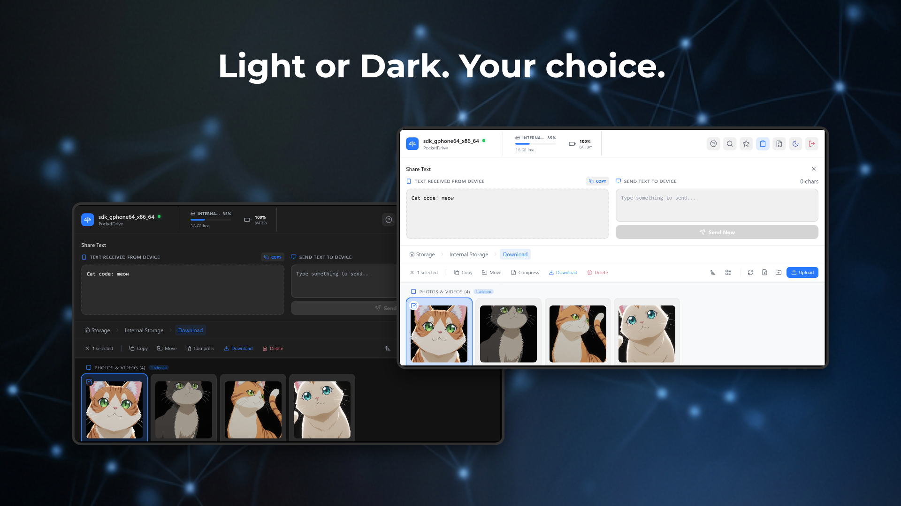
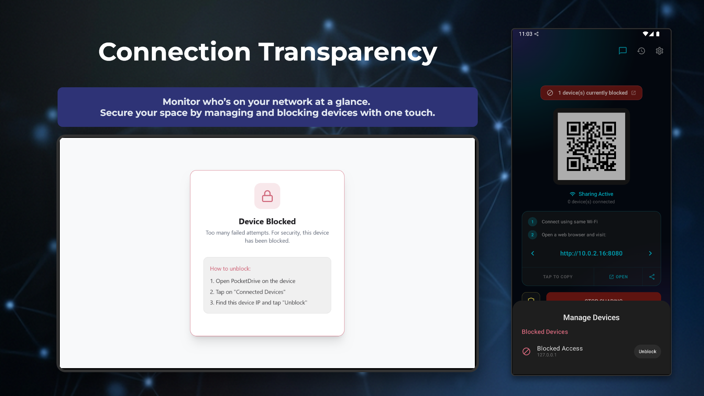
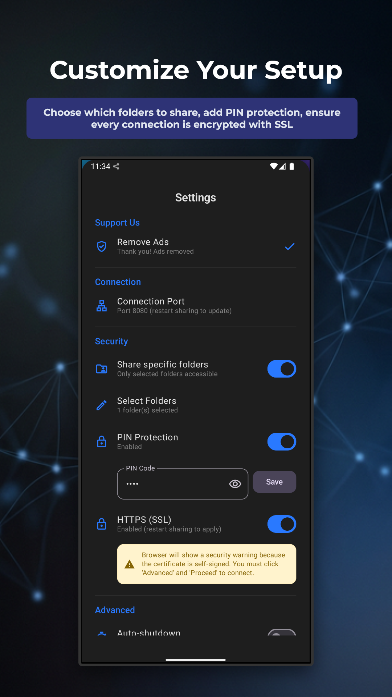

About PocketDrive
PocketDrive turns your Android device into a portable file server. Share files directly between phones, tablets, and computers on the same WiFi network, no internet connection required. Whether you're transferring photos after a family gathering, sharing documents in a meeting, or moving large video files between your devices, PocketDrive handles it all without uploading anything to the cloud.
Unlike cloud-based sharing services, PocketDrive keeps your data entirely on your local network. There are no file size limits, no account sign-ups, and no monthly fees. Just connect to the same WiFi, open PocketDrive, and start sharing. Any device with a web browser can receive files, even desktops and laptops.
Direct WiFi Transfer
Share files between devices on the same local network without needing an internet connection.
Any File Type
Transfer photos, videos, documents, music, APKs, any file you can select on your device.
No Size Limits
Send files of any size with no restrictions. Move multi-gigabyte videos just as easily as small documents.
Privacy First
Your files never leave your local network. No cloud uploads, no remote servers, no accounts required.
Clipboard Sharing
Share text, links, and notes between devices instantly through the built-in clipboard sync.
QR Code Pairing
Quickly connect devices by scanning a QR code, no manual IP addresses or complicated setup.
Cross-Platform Access
Any device with a web browser on the same network can access shared files, including computers.
Multi-Device Support
Connect and share with multiple devices simultaneously in a single session.
Screenshots








Frequently Asked Questions
- Does PocketDrive need internet to transfer files?
- No. PocketDrive works entirely over your local WiFi network. Your files are transferred directly between devices without ever touching the internet or any cloud server.
- What file types can I transfer?
- You can transfer any file type, photos, videos, documents, music, APKs, and more. There are no restrictions on what you can share.
- Is there a file size limit?
- No. PocketDrive has no file size restrictions. You can transfer files of any size, from a small text file to multi-gigabyte videos.
- Do I need to create an account?
- No. PocketDrive works without any sign-up, login, or account creation. Just install and start sharing.
- Can I share files with a computer?
- Yes. Any device with a web browser on the same WiFi network can access shared files through PocketDrive's built-in web interface.
- Is my data secure?
- Yes. Files are transferred directly between devices on your local network and never uploaded to any cloud server. Your data stays private and under your control.